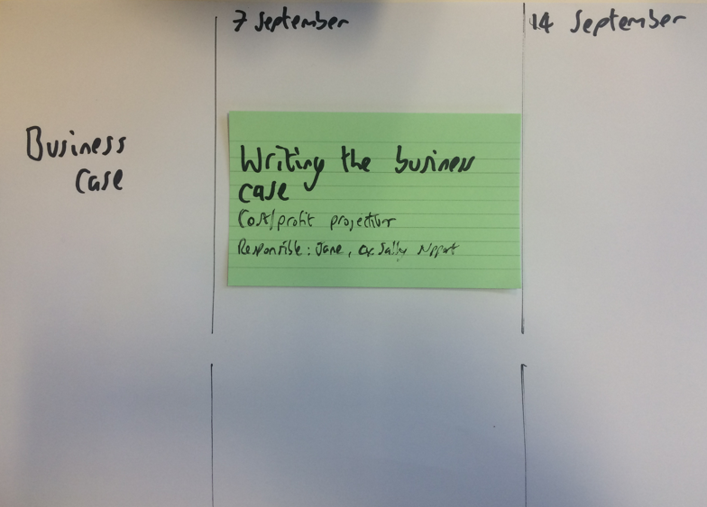

A workshop where we decide who is responsible for each part of the project.
Preparation: To prepare for the workshop you will need to write each project element on an index card. You will need to prepare a large sheet of brown paper with the next 3 months on it. Each week should be the width of one index card 5" or 13cm.
Each step of the project is written on an index card (or post-it). These are then placed on a time planning wall sheet.
Example:
We want to know who is ultimately in charge and who holds the purse strings. These people will ensure the success of the project.
We need to know who is involved in this project and what their needs are. We expect to identify 5 - 10 stakeholders here. We expect to identify further stakeholders once we begin the interviews so we’ll add 3 extra / spare slots. The interviews will be face to face or over the phone. Here's a guide to stakeholder interviews.